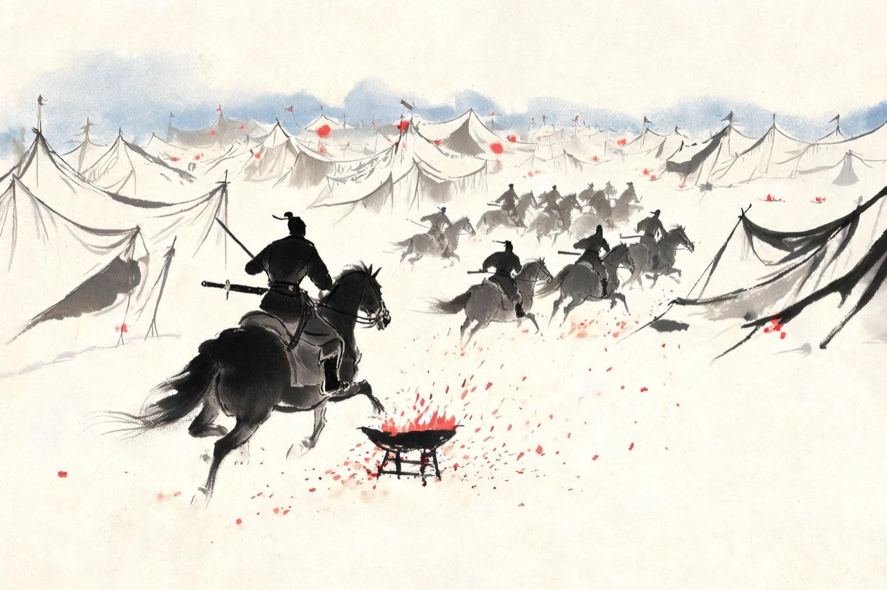

辛弃疾 · 1161-1162
沙场
五十骑闯五万众
青兕
掌书记上任头一件难事，是个和尚。
义端本有自己的千人队伍，经你劝说，率部来归耿京。谁知这和尚心怀两端，某夜趁乱窃了耿京的帅印，逃往金营——帅印是义军的命，献印金人，就是投名状。
耿京大怒，要拿你是问：人是你引来的。你说：给我三天。你提剑上马，单人独骑，抄小路追了出去。
追上时，义端俯首就缚。他说：我识君真相，乃青兕也，力能杀人，幸勿杀我。青兕——犀牛那样的猛兽。这个叛徒到了刀下，才想起你是谁。
你没有多话。斩其首，携印归营。耿京自此再不提引荐之责，军中上下看你的眼神都变了。
注
- 「我识君真相，乃青兕也，力能杀人，幸勿杀我」——《宋史》本传原文，义端临死语，正史有载
- 追斩地点：史无明文，义军活动于泰山周边，本篇取泰安，演绎，待校
- 「窃印」细节：义端窃耿京印奔金，本传有明文；「三天」之约为演绎，待校
- 「提剑上马，单人独骑」「耿京自此再不提引荐之责」「军中上下看你的眼神都变了」：本传无此细节，演绎，待校
奉表
义军做大了，就该找朝廷。绍兴三十二年正月，耿京遣贾瑞、你等十一人，奉表南下归宋。
那时完颜亮已在采石战败，死于内乱；金人北撤，新主完颜雍（金世宗）一面与宋议和，一面厉行招抚——各路义军的头上都悬着一把刀：受招者复业，拒不从者剿灭。这时候南归，不只是投奔，是抢在屠刀落下之前，替数十万中原忠义人找一个名分。
你随表抵达建康。高宗皇帝正在建康劳师，行在召见。你一个二十二岁的北方来客，站到了宋朝皇帝面前——上表、陈说、对答。
召见的结果：耿京授天平军节度使，你授承务郎、天平军节度掌书记，义军名分落定。君臣相得，南北联通，事情看起来正走在最好的路上。
注
- 召见地点：绍兴三十二年正月高宗幸建康劳师，召见于建康行在——非临安，本篇从《宋史》
- 奉表正使为贾瑞，辛弃疾等十一人同行，从邓谱
- 完颜亮采石败、为部下所杀（绍兴三十一年末），金世宗即位后对义军「受招者复业」之策，背景从《宋史》及邓谱，措辞有概括

五十骑
正事办完，你随军北返。走到海州，噩耗追上了你：耿京被害了。
叛徒叫张安国，义军将领，金人许以重赏，他趁你南下，杀帅降金。数十万义军，一夜溃散；中原忠义的门面，塌了一半。金人已经把张安国当宝贝供在济州大营里。
同行的人面面相觑。溃散的势，谁也拉不住；北岸是金人的地界，回去就是送死。你算了算手里的本钱——统制王世隆，忠义人马全福，还有骑从五十。
五十骑，夜奔济州。五万人的大营，营门、哨卡、帐幕连绵如夜里的山。你们直趋中军——张安国正与金将酣饮。没有冲杀，没有火并，你下马入帐，当着一帐的酒客，抓住这个叛徒，缚置马上，掉头就走。
等金人回过神，纵马来追，你们已经出营。昼夜兼程，渴饮饥餐，渡淮南奔——把活着的张安国一路押到临安，献于行在，斩于市。
后来洪迈为你写记，说这一夜：赤手领五十骑，缚取于五万众中，如挟毚兔。又说：壮声英概，懦士为之兴起，圣天子一见三叹息。
你二十三岁。此后一千年，读书人提起少年英雄，绕不开这个名字。
注
- 「五十骑」「五万众」两个数字均出洪迈《稼轩记》；《宋史》本传只作「即众中缚之以归」，未载数字——五万或为虚数
- 「壮声英概，懦士为之兴起，圣天子一见三叹息」——亦出《稼轩记》
- 渡淮南奔献俘：本传作「献俘行在，斩安国于市」，时高宗已还临安；济州大营在今济宁（金济州治任城），从邓谱
- 「昼夜兼程，渴饮饥餐」：行军细节为演绎，待校